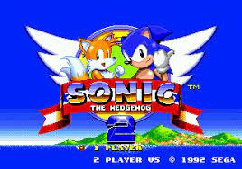
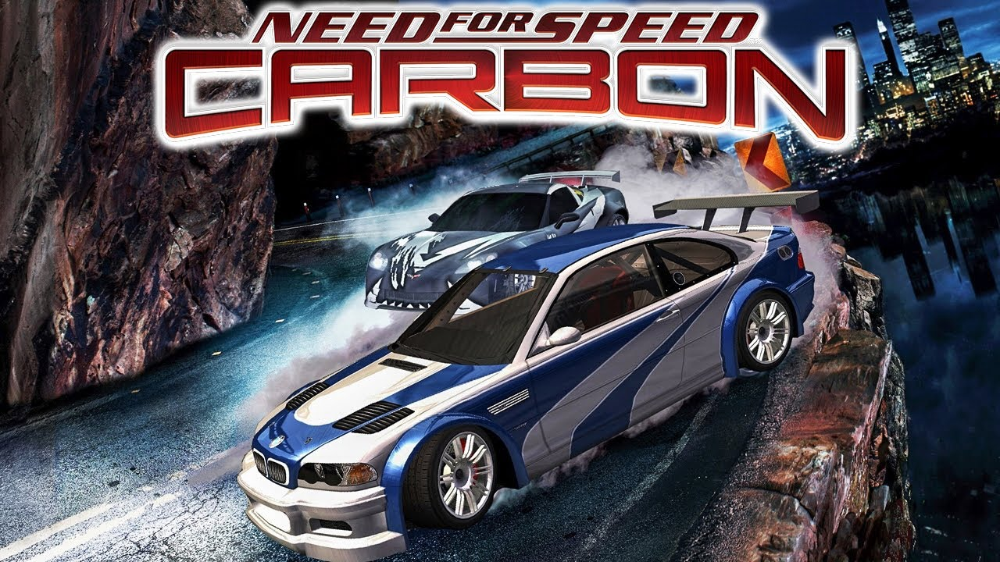

-
Sandbox: Grand Theft Auto San Andreas
-
Plataforma 2D: Sonic The Hedgehog 2

-
Plataforma 3D: A Hat in Time
-
Run and Gun Shooter: Cuphead
-
Visual Novel: Ace Attorney (Serie)
-
Corrida: Need For Speed: Carbon

-
Metroidvania: Castlevania Arria Of Sorrow
-
Action RPG: Yakuza 0
-
Luta: Dragon ball Z Budokai Tenkaichi 3
-
Survival: Minecraft

Eu joguei isso tanto no PS2 quando era criança que nem aguento mais tocar, devo ter pelo menos mais de 10k de horas nesse banger.
Ele é meu plataforma favorito só pelo fato deu poder fazer uma jogatina dele e zerar no automático com a cabeça nas nuvens enquanto aprecio a soundtrack.
Jogo com bela arte, bom senso de humor, personagens carismáticos, mecanicas divertidas, costumização otima, suporte para mods, cada peça que se coleta se sente única a missões.

Foi muito divertido e desafiante platinar ele quando lançou além da arte ser extremamente chamativa e unica no mundo dos jogos.

De visual novel só joguei Danganronpa 1 2 e V3, Doki Doki Literatue Club, VA11 HALL-A:Cyberpunk, Ghost Trick Phantom Detective e todos os Ace Attorney (Miles Edgeworth 1 e 2 também). Os jogos tem um estilo e personagens muito bom além da música adicionar bastante para a atmosfera e ficar dando uma de "advogado" foi bem cativante.
Eu gosto muito do visual dele e como ele é curtinho para zerar que ironicamente é uma das maiores criticas que dão ao jogo, diferente do Most Wanted e Underground 2 que chega um ponto que o jogo fica tacando corrida em excesso na minha cara fazendo virar mais uma tarefa do que entretenimento.
Foi bastante divertido ficar testando oque cada alminha faz, exceto pela parte do grind gigante que é pra pegar elas tudo.
De um lado esse jogo é um drama policial sério em que você controla 2 yakuzas, de outro é um que você fica explorando a cidade caindo em umas sidequests que contém umas história extremamente engraçada e fica jogando uns minigame.
Eu sei, definitivamente não é um jogo de luta tradicional além de ser mecanicamente extremamente simples e desbalanceado oque não é nada bom para um jogo de luta, mas veja bem ficar tacando poderzinho ao pressionar 2 botões que destroe o planeta para mim satisfaz meus desejos instintivos de primata.

Simplesmente Minecraft.